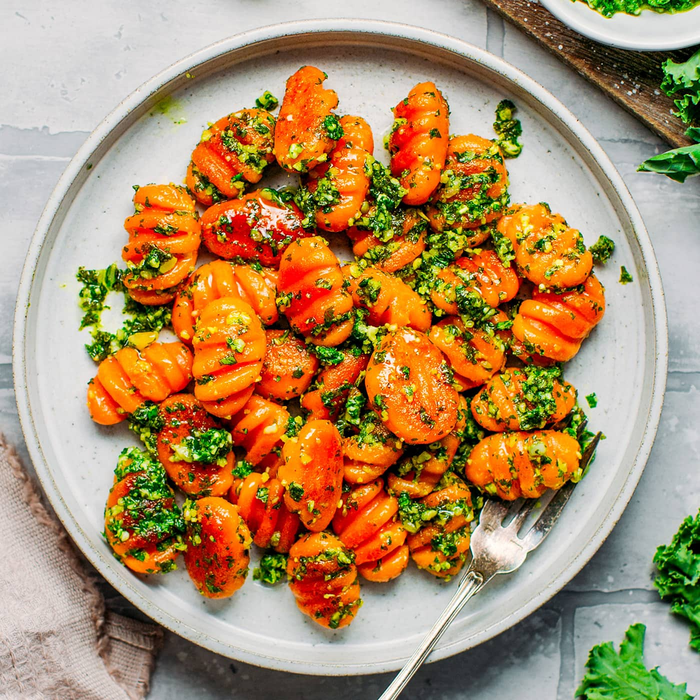

Sweet Potato Gnocchi Recipe

Description
If you’re looking for a simple 3 INGREDIENT vegan dinner the look no further! This Sweet Potato Gnocchi comes together in no time and it’s SO GOOD
Ingredients
- 1 pound sweet potatoes
- 1 large egg
- 1 clove garlic, pressed
- 1 teaspoon salt
- 1 teaspoon ground nutmeg or to taste
- 2 cups all-purpose flour, or as needed
Steps
- Boil the spaghetti.
- Toast the garlic in olive oil.
- Stir the seasonings into the pasta, then stir in the garlic and oil.
- Toss with cheese.